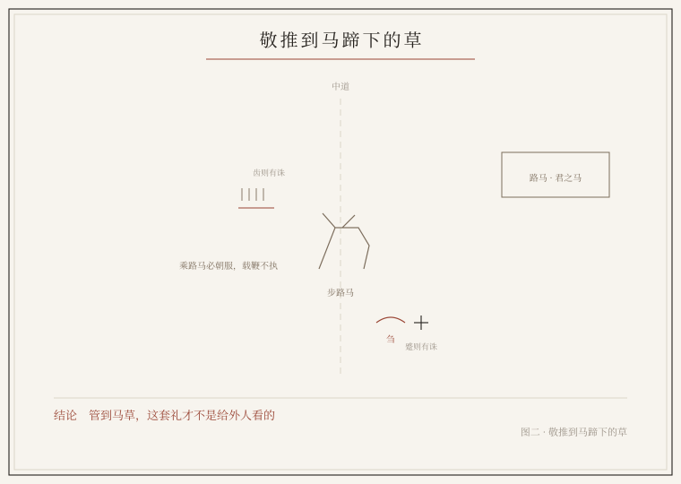

曲礼上 · 一·一百二十五 · 第 123 课
曲礼上之末：国君见祭牛下车、过宗庙凭式；大夫士过君门下车、见路马凭式；乘路马必朝服、载鞭而不执、不敢授绥、居左必式；牵路马走中道；踢路马之草有罚，问路马之年有罚。
说什么事：国君下齐牛，式宗庙。大夫士下公门，式路马。乘路马，必朝服载鞭策，不敢授绥，左必式。步路马，必中道。以足蹙路马刍，有诛。齿路马，有诛。
落在哪一层：仪，兼及礼意。讲的是「敬至于物」。
为何编在此位：此为曲礼上收篇。自「毋不敬」起，至「齿路马，有诛」止，敬一路推到马草上。
【经】國君下齊牛，式宗廟。大夫士下公門，式路馬。乘路馬，必朝服載鞭策，不敢授綏，左必式。步路馬，必中道。以足蹙路馬芻，有誅。齒路馬，有誅。
【注】皆廣敬也。路馬，君之馬。載鞭策，不敢執也。齒，欲年也。誅，罰也。
齐牛 祭祀所用之牲。注疏或作「齐牛」，或作「牲」。
式宗庙 疏引熊氏：「此文误，当以《周礼》注为正，宜云『下宗庙，式齐牛』。」《齐右职》「凡有牲事，则前马」，注「王见牲，则拱而式」。
公门 疏「谓君之门也」。疏又「马比门轻，故有下、式之异」。
路马 注「君之马」。路，后世作辂，君之礼车。
载鞭策 注「不敢执也」。疏「不敢执杖杖马，故但载杖以行」。
不敢授绥 疏「君在则仆人授绥。今习仪者，身既居左，自驭而乘，虽有车右，而不敢授绥与己也」。
步路马 疏「此谓单牵君马行时。步，独行也……必在中道正路，为敬」。
蹙刍／齿 注「齿，欲年也」。疏「刍，食马草也。诛，罚也……若以足蹴踏之者，则有责罚」；「论量君马岁数，亦为不敬」。
国君见祭牛则下车，过宗庙则凭式。大夫、士过君门则下车，见路马则凭式。乘路马必着朝服，鞭策只载在手边而不执；不敢把绥递给人；居左必凭式。单独牵路马行，必走道路正中。用脚踏路马的草料，有罚；打听路马的年龄，有罚。
一节七事，敬一层层往低处推：从宗庙推到君门，从君门推到君马，从马推到马蹄下的草。推到草，就推到底了。曲礼上至此收篇，收在一句「皆广敬也」。
第一层 下与式之别 宗庙重则下，牲稍轻则式；公门重则下，路马稍轻则式。同一颗敬心，按轻重分配动作。
第二层 载而不执 鞭策载在车上，不拿在手里。手里的东西会想用，所以干脆不拿——这是极 practical 的一条。
第三层 不敢授绥 绥是给人上的，此处不敢授，因为居左者自驭，无位可授。
第四层 蹙刍有诛 草的罚最轻，也最见制度的密度。管到马草，说明这套礼不是给外人看的，是日日要行的。
与今日何干 一个组织真正的水准，看它管到多细的地方。管到马草的，不会管不好人。
| 左 | 右 |
|---|---|
| 国君下齐牛，式宗庙 | 牲事则下，宗庙则式（疏谓文倒） |
| 大夫士下公门，式路马 | 门重马轻，故有下、式 |
| 乘路马必朝服 | 君物不可慢 |
| 载鞭策，不敢执 | 载而不用，不忍执 |
| 不敢授绥 | 居左自驭，无位可授 |
| 左必式 | 处尊位而不敢自安 |
| 步路马必中道 | 独行君马，走正路 |
| 蹙刍有诛，齿有诛 | 皆广敬也，罚及马草 |
画一条道路的正中线，一匹马单独沿中线行走、无人骑乘；马侧地上有一小堆草料，草料旁一只脚的脚印正压向草边、未落下；马头前另有一枚小小的算筹，示意有人在数其年岁、被一道短竖线止住。路两侧各留空。不画人面、不写文字。赭色只用在草料与那枚算筹上。
